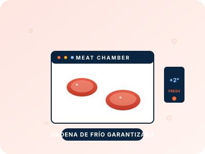
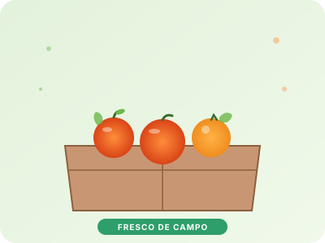
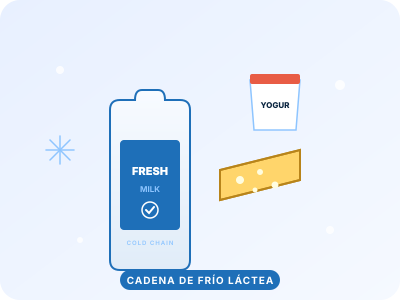
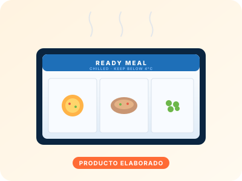

La cadena de frío no es igual para todos los productos. Cada sector tiene sus propias exigencias de temperatura, tiempos, documentación y manipulación. En VG Logistics nos centramos en los que conocemos a fondo.
Trabajamos con productores, mataderos, salas de despiece y distribuidores cárnicos. Ofrecemos transporte a temperatura controlada tanto en fresco (+1 a +4 °C) como en congelado (−18 a −25 °C), cumpliendo los requisitos sanitarios y de bienestar del producto exigidos por la normativa europea.


La producción hortofrutícola de Lleida y del resto del arco mediterráneo es uno de nuestros motores. Coordinamos recogidas en campo, centrales hortofrutícolas y exportación a los principales mercados europeos con los tiempos justos que requiere el producto fresco.
El sector lácteo exige una cadena de frío continua y trazable. Gestionamos el transporte entre centrales, plantas de transformación y distribución final, manteniendo la temperatura exigida en toda la cadena.


Platos preparados, precocinados, masas refrigeradas, bollería, postres, productos del mar envasados, congelados y cualquier referencia alimentaria que requiera temperatura controlada desde la fábrica hasta el centro de distribución.